Pâte à tartiner de Christophe Michalak

Aujourd’hui, histoire de bien commencer la semaine, je vous retrouve avec une recette ultra gourmande puisqu’il s’agit de la pâte à tartiner de Christophe Michalak. Je peux vous dire que grâce à elle (ou à lui plutôt) j’ai enfin pu tirer un trait définitivement sur le nutella.
Bon, je pense que la plupart d’entre nous ici nous sommes addict (accro, épris, dépendant) du Nutella (peut être pas autant que moi) ou si ce n’est pas vous c’est sûrement vos enfants. Enfin bref je ne suis jamais allée dans une maison où il n’y avait pas de Nutella^^
Le nutella, si la plupart d’entre nous en sommes accros c’est forcément parce que c’est carrément bon! Le problème c’est sa composition (et notamment l’huile de palme qu’il contient). Alors je ne vais pas faire ici un article anti-Nutella ni même vous dire ce qui est bon ou mauvais (surtout vu le tas de cochonneries que j’avale) mais avec mon chéri on a décidé de stopper (freiner) notre consommation de Nutella et nous faire notre pâte à tartiner tout seul comme des grands. J’étais franchement sceptique car j’avais essayé plein de recettes de pâte à tartiner différentes sauf que j’en revenais toujours au même résultat : je retournais acheter du Nutella. Tout ça c’était avant que je trouve « THE » recette chez Christophe Michalak. Franchement j’avais la flemme de me lancer, j’étais persuadée à l’avance que je ne serai pas plus fan que ça et j’avais totalement tort évidemment (sinon je ne serais pas là à vous écrire).
Depuis un mois maintenant je fais la recette de la pâte à tartiner de Christophe Michalak et voici mes impressions : mon addiction a empiré, je suis obligée de trouver des solutions débiles pour me déculpabiliser (comme plonger des flocons d’avoine dedans et manger ça à la cuillère) car je ne m’arrête plus et j’y pense vraiment toute la journée (demandez à mes collègues). J’adore son odeur de noisettes torréfiées, sa texture et ma conscience adore sa composition!
Bref vous l’aurez compris, Christophe Michalak m’a absolument convaincue avec sa recette et je vous la conseille (surtout si vous avez des enfants c’est bien plus sain). Avec cette recette j’arrive presque à remplir deux pots de confitures entiers. J’avais peur d’en avoir trop car ça ne se conserve que 15 jours (à température ambiante) mais finalement au bout d’une semaine (quatre jours) il ne restait plus rien.
Si l’envie vous prend d’essayer la recette, la voici!
Vous pouvez essayer mais je vous déconseille de lécher l’écran 😉
Gobelet de chez Revol
Ingrédients
- Noisettes entières - 270g
- Sucre en poudre - 120g
- Sucre glace - 150g
- Chocolat au lait (si vous trouvez du chocolat Jivara à 40% de cacao c'est le mieux) - 150g
- Poudre de lait - 25g
- Cacao amer en poudre (type Van houten) - 10g
- Huile de pepins de raisins - 5g
- Sel fin - 3g
Instructions
- Disposer les noisettes sur une plaque allant au four
- Dans un four à 180° faites torréfier les noisettes pendant 15-20 minutes N'ayez craintes elles vont devenir presque noires mais c'est normal. Christophe Michalak les laisse beaucoup plus longtemps mais j'ai l'impression que tout va cramer alors (peut-être à tord) je les retire plus tôt.
- Pendant ce temps préparer le caramel (à sec): Mettre votre casserole sur le feu (assez fort) et verser 1/3 de la quantité de sucre. NE REMUEZ PAS et laissez fondre Quand ça commence à fondre ajouter 1/3 de plus et laisser fondre à moitié Ajouter enfin le dernier tiers de sucre et pour l'aidez à fondre vous pouvez donner des petits mouvements circulaires avec la casseroles mais ne remuez surtout pas.
- Ajouter les 3g de sel (ne remuez pas, faites juste des mouvements circulaires avec la casserole)
- Verser le caramel sur du papier sulfurisé et laissez-le refroidir
- Quand les noisettes sont prêtes, enlevez leur la peau Pour cela, placez-les dans un torchon et frottez-les les unes contre les autres
- Dans votre robot mixeur, verser 120g des noisettes torréfiées
- Ajouter le caramel cassé en morceaux
- Mixer
- Vous allez obtenir une pâte (du pralin)
- Transvaser le pralin dans un bol
- Garder votre mixeur prêt de vous
- Dans votre robot mixeur verser les 150g de noisettes restantes
- Ajouter le sucre glace
- Mixer
- Pendant ce temps, faire fondre le chocolat au lait (soit au bain marie mais c'est long soit au micro onde) Pour faire fondre du chocolat au micro-onde je vous conseille de couper touts les carrés dans un bol et de les faire fondre par palier de 10 sec en vérifiant à chaque fois s'il est fondu ou pas afin pour d’éviter qu'il ne brûle
- Ajouter le chocolat fondu dans le mixeur
- Continuer de mixer
- Vous obtenez une pâte. Il s'agit du Gianduja au lait noisettes (rien que de ça j'en raffole)
- Laisser ce mélange dans le mixeur
- Ajouter à votre Gianduja la poudre de lait, l'huile de pépin de raisin, le cacao en poudre et le pralin (préparé à l'étape n°1)
- Mixer 5 minutes (au bout de 3 minutes commencez à regarder la texture car plus on mixe plus le mélange se liquéfie)
- Voilà c'est fini vous venez de faire votre pâte à tartiner et je vous assure que vous allez devoir en refaire et en refaire maintenant que vous l'avez goûté 😉
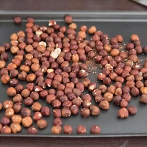
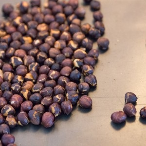
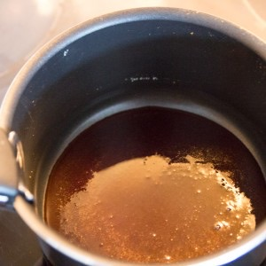
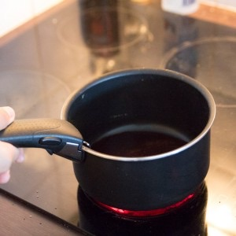
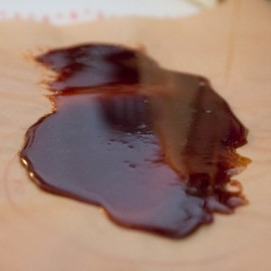
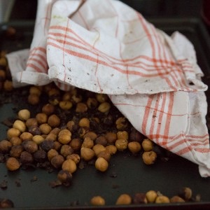
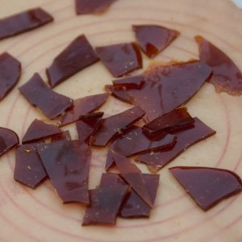
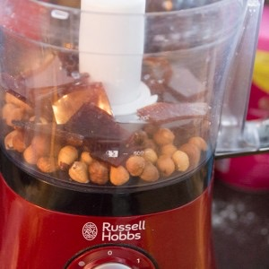
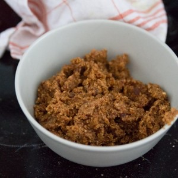
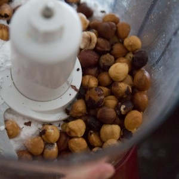
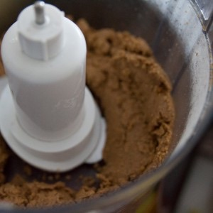
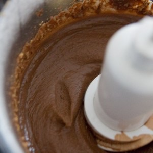
Les tips de la communauté
Pâte à tartiner révolutionnaire, bien meilleure que Nutella selon quasi tous les testeurs. Recette délicate (puissance robot crucial), mais résultat exceptionnel quand bien exécutée. Très demandée en variante - nombreux retours positifs malgré défis techniques.
Astuces
- Robot Russell Hobbs 750W recommandé pour dosage équilibré
- Ne PAS utiliser robot trop puissant: mixer par petits coups progressifs
- Caraméliser les noisettes 20 min à 180°C pour torréfaction idéale
- Se conserve 15 jours (possiblement plus, jamais testé longtemps car consommée très vite)
- Laisser à température ambiante, jamais au réfrigérateur qui durcit
Variantes suggérées
- Ajouter huile pour plus de fluidité si pâte trop compacte
- Remplacer noisettes par amandes (résultat incertain)
- Réduire sucre si gianduja trop sucré (choix chocolat important)
Ajustements signalés
- Choisir gianduja/chocolat au lait de qualité (pas chocolat Pâques trop sucré)
- Mixer très progressivement pour éviter échauffement qui compact la pâte
- Poudre de lait en café/thé au supermarché, pas rayon bébé uniquement